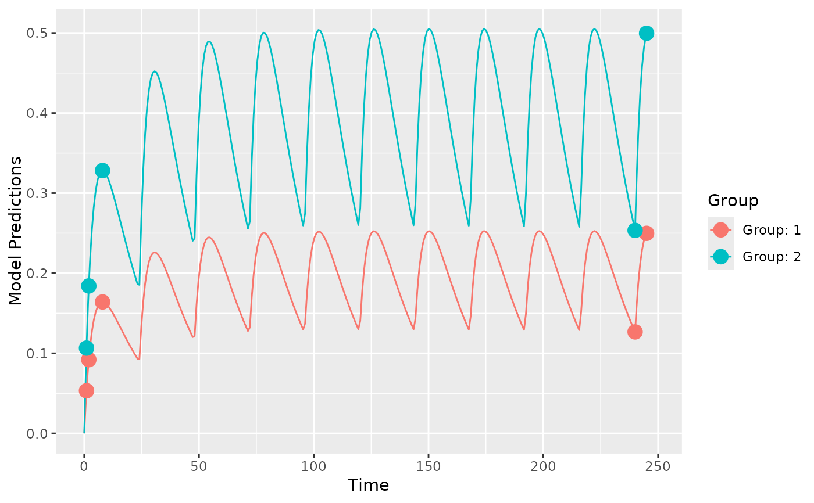

PopED - Population (and individual) optimal Experimental Design.
Source:R/PopED-package.R
PopED-package.RdPopED computes optimal experimental designs for both population and individual studies based on nonlinear mixed-effect models. Often this is based on a computation of the Fisher Information Matrix (FIM).
Details
To get started you need to define
A model.
An initial design (and design space if you want to optimize).
The tasks to perform.
There are a number of functions to help you with these tasks. The user-level functions defined below are meant to be run with a minimum of arguments (for beginners to advanced users). Many of the other functions in the package (and not listed here) are called by these user-level functions and are often not as user friendly (developer level or advanced user functions).
Define a structural model:
ff.PK.1.comp.oral.md.CL,
ff.PK.1.comp.oral.md.KE,
ff.PK.1.comp.oral.sd.CL,
ff.PK.1.comp.oral.sd.KE,
ff.PKPD.1.comp.oral.md.CL.imax,
ff.PKPD.1.comp.sd.CL.emax.
Define a residual unexplained variability model (residual error model):
feps.add.prop,
feps.add,
feps.prop.
Create an initial study design (and design space):
create.poped.database.
Evaluate the model and/or design through simulation and graphics:
plot_model_prediction,
model_prediction,
plot_efficiency_of_windows.
Evaluate the design using the FIM:
evaluate_design,
evaluate.fim,
evaluate.e.ofv.fim,
ofv_fim,
get_rse.
Optimize the design (evaluate afterwards using the above functions):
poped_optim,
See the "Examples" section below for a short introduction to using the above functions. There are several other examples, as r-scripts, in the "examples" folder in the PopED installation directory located at (run at the R command line):
system.file("examples", package="PopED").
References
J. Nyberg, S. Ueckert, E.A. Stroemberg, S. Hennig, M.O. Karlsson and A.C. Hooker, "PopED: An extended, parallelized, nonlinear mixed effects models optimal design tool", Computer Methods and Programs in Biomedicine, 108, 2012.
M. Foracchia, A.C. Hooker, P. Vicini and A. Ruggeri, "PopED, a software for optimal experimental design in population kinetics", Computer Methods and Programs in Biomedicine, 74, 2004.
Author
Maintainer: Andrew C. Hooker andrew.hooker@farmaci.uu.se (ORCID) [translator, copyright holder]
Authors:
Marco Foracchia (O-Matrix version)
Sebastian Ueckert (ORCID) (MATLAB version)
Joakim Nyberg (MATLAB version)
Other contributors:
Eric Stroemberg (MATLAB version) [contributor]
Martin Fink (Streamlining code, added functionality, vignettes) [contributor]
Giulia Lestini (Streamlining code, added functionality, vignettes) [contributor]
Examples
library(PopED)
##-- Model: One comp first order absorption
## -- Analytic solution for both mutiple and single dosing
ff <- function(model_switch,xt,parameters,poped.db){
with(as.list(parameters),{
y=xt
N = floor(xt/TAU)+1
y=(DOSE*Favail/V)*(KA/(KA - CL/V)) *
(exp(-CL/V * (xt - (N - 1) * TAU)) * (1 - exp(-N * CL/V * TAU))/(1 - exp(-CL/V * TAU)) -
exp(-KA * (xt - (N - 1) * TAU)) * (1 - exp(-N * KA * TAU))/(1 - exp(-KA * TAU)))
return(list( y=y,poped.db=poped.db))
})
}
## -- parameter definition function
## -- names match parameters in function ff
sfg <- function(x,a,bpop,b,bocc){
parameters=c( V=bpop[1]*exp(b[1]),
KA=bpop[2]*exp(b[2]),
CL=bpop[3]*exp(b[3]),
Favail=bpop[4],
DOSE=a[1],
TAU=a[2])
return( parameters )
}
## -- Residual unexplained variablity (RUV) function
## -- Additive + Proportional
feps <- function(model_switch,xt,parameters,epsi,poped.db){
returnArgs <- do.call(poped.db$model$ff_pointer,list(model_switch,xt,parameters,poped.db))
y <- returnArgs[[1]]
poped.db <- returnArgs[[2]]
y = y*(1+epsi[,1])+epsi[,2]
return(list( y= y,poped.db =poped.db ))
}
## -- Define design and design space
poped.db <- create.poped.database(ff_fun=ff,
fg_fun=sfg,
fError_fun=feps,
bpop=c(V=72.8,KA=0.25,CL=3.75,Favail=0.9),
notfixed_bpop=c(1,1,1,0),
d=c(V=0.09,KA=0.09,CL=0.25^2),
sigma=c(0.04,5e-6),
notfixed_sigma=c(0,0),
m=2,
groupsize=20,
xt=c( 1,2,8,240,245),
minxt=c(0,0,0,240,240),
maxxt=c(10,10,10,248,248),
bUseGrouped_xt=1,
a=list(c(DOSE=20,TAU=24),c(DOSE=40, TAU=24)),
maxa=c(DOSE=200,TAU=24),
mina=c(DOSE=0,TAU=24))
## create plot of model without variability
plot_model_prediction(poped.db, model_num_points = 300)

if (FALSE) { # \dontrun{
## create plot of model with variability
plot_model_prediction(poped.db, IPRED=T, DV=T, separate.groups=T, model_num_points = 300)
} # }
## evaluate initial design
evaluate_design(poped.db)
#> $ofv
#> [1] 28.9197
#>
#> $fim
#> V KA CL d_V d_KA d_CL
#> V 0.05336692 -8.683963 -0.05863412 0.000000 0.000000 0.000000
#> KA -8.68396266 2999.851007 -14.43058560 0.000000 0.000000 0.000000
#> CL -0.05863412 -14.430586 37.15243290 0.000000 0.000000 0.000000
#> d_V 0.00000000 0.000000 0.00000000 999.953587 312.240246 3.202847
#> d_KA 0.00000000 0.000000 0.00000000 312.240246 439.412556 2.287838
#> d_CL 0.00000000 0.000000 0.00000000 3.202847 2.287838 3412.005199
#>
#> $rse
#> V KA CL d_V d_KA d_CL
#> 8.215338 10.090955 4.400304 39.833230 60.089601 27.391518
#>
if (FALSE) { # \dontrun{
# Optimization of sample times
output <- poped_optim(poped.db, opt_xt=TRUE, parallel = TRUE)
summary(output)
get_rse(output$FIM, output$poped.db)
plot_model_prediction(output$poped.db)
# Optimization of sample times and doses
output_2 <- poped_optim(poped.db, opt_xt=TRUE, opt_a=TRUE, parallel = TRUE)
summary(output_2)
get_rse(output_2$FIM,output_2$poped.db)
plot_model_prediction(output_2$poped.db)
# Optimization of sample times with only integer time points in design space
# faster than continuous optimization in this case
poped.db.discrete <- create.poped.database(ff_fun=ff,
fg_fun=sfg,
fError_fun=feps,
bpop=c(V=72.8,KA=0.25,CL=3.75,Favail=0.9),
notfixed_bpop=c(1,1,1,0),
d=c(V=0.09,KA=0.09,CL=0.25^2),
sigma=c(0.04,5e-6),
notfixed_sigma=c(0,0),
m=2,
groupsize=20,
xt=c( 1,2,8,240,245),
minxt=c(0,0,0,240,240),
maxxt=c(10,10,10,248,248),
discrete_xt = list(0:248),
bUseGrouped_xt=1,
a=list(c(DOSE=20,TAU=24),c(DOSE=40, TAU=24)),
maxa=c(DOSE=200,TAU=24),
mina=c(DOSE=0,TAU=24),
ourzero = 0)
output_discrete <- poped_optim(poped.db.discrete, opt_xt=T, parallel = TRUE)
summary(output_discrete)
get_rse(output_discrete$FIM,output_discrete$poped.db)
plot_model_prediction(output_discrete$poped.db)
# Efficiency of sampling windows
plot_efficiency_of_windows(output_discrete$poped.db,xt_windows=0.5)
plot_efficiency_of_windows(output_discrete$poped.db,xt_windows=1)
} # }